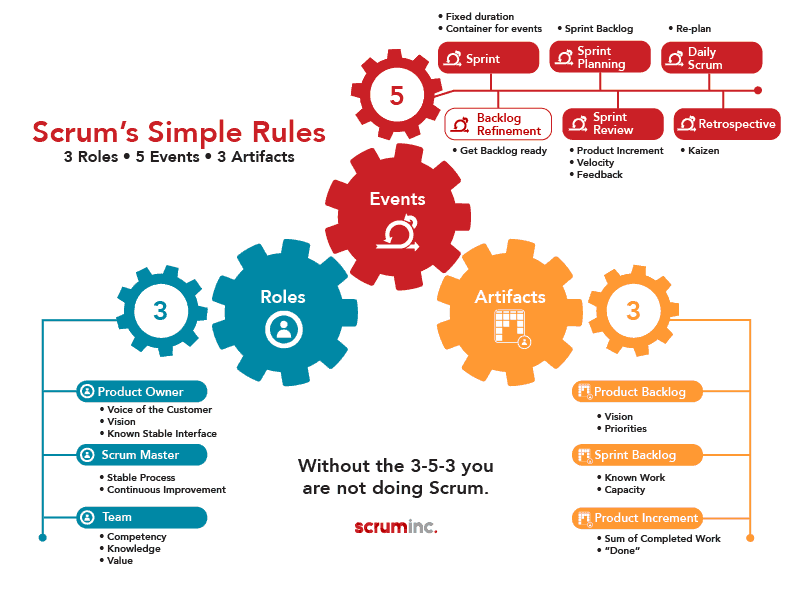
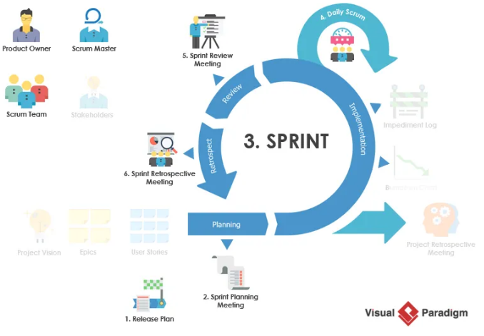

康闓科技 2020 / 02 / 06 15:00 - 16:00 單程445元 1小時20分 若要提前一小時到 建議搭乘0821車次 12:55 - 13:25
公司介紹
輿情分析
專案管理
優勢劣勢
持續交付
公司基本資料
康闓科技於 2018 年創立，2019 年正式將總部設立於高雄。我們是一間創新且有企圖心的公司，目標是打造 Ai 人工智能以及新型態的電商生態，使生活更加便利，要代表國家成為世界一流的科技公司，我們堅持將團隊角色擺在最合適的位置上，達成事半功倍效果，絕不苛刻努力付出的營運團隊，這是我們的營運精神。
輿情分析
(無用) 1F推cip604: 前陣子剛面過，沒開冷氣和面試官一起流汗
(無用-刊登的職缺就可以看得出來) 使用 React Native 或者 Flutter 去製作app
(稍具參考價值) 目前都是在接案居多
(參考價值) 面試時可能需要自己帶筆電
面試成本
機車 > 嘉義高鐵 10 (20分鐘)
走路 停車場 > 高鐵 0 (5分鐘)
嘉義高鐵 > 左營高鐵 410 (31分鐘)
走路 高鐵 > 捷運 (3分鐘)
捷運左營高鐵 > 捷運美麗島 25元 (13分鐘)
走路捷運 > 公司 0 (7分鐘)
職缺要求
1. 與 UI 設計師 、前端工程師、後端工程師配合，並能與圖隊成員進行良好及高效率的溝通
2. 面對專案開發的困難，經常可以想到一百種辦法
3. 可以掌握客戶需求背後的動機，洞悉客戶真正的需求，而不是一個口令一個動作
4. 依據專案內容，規劃及撰寫需求文件
5. 掌控專案開發進度，並能識別風險、找出解決問題的方案
6. 擔任客戶與執行小組間的溝通橋樑
專案經理審視
授權團隊，不進行微觀管理
包容各方的團隊環境
富有成效且注重結果
很好的溝通者-聆聽並分享信息
支持職業發展並討論績效
對團隊有清晰的願景/策略
具有相關技術
跨公司合作
公司可能採取的開發方式 Scrum Agile
 
Scrum is an iterative, incremental framework for project management
Dev Team (開發團隊)
Product Owner（PO，產品負責人）
Scrum Master（SM，無中文名稱）
Product Backlog（產品待辦清單）
Daily Scrum（每日站立會議 15M）
Sprint （衝刺 2~4W）
Sprint Backlog（衝刺待辦清單）
Sprint Planning（衝刺規劃會議 4~8H）
Sprint Review（衝刺檢視會議）
Sprint Retrospective / Sprint Retro（衝刺回顧會議 1.5~3H)
自己的專案經驗
啟動會議
需求訪談
執行
臨時需求
(會議))
期末
結案
維護
如果我是面試官想對應徵者提問那些問題
可以請你介紹一下 你之前從事的專案經驗嗎
為什麼想來高雄
為什麼想來我們公司
如果有2個技術員 一個設計師 一個月內要完成數據分析平台 你會怎麼規劃
那如果需求大改 你要怎麼跟團隊說明 以及重新分配
可以說一下你對敏捷開發了解多少嗎
如何協調各方意見與資源，達到專案目的
你過去的專案最緊急的事態
如果發生人事異動你會如何處置
成員發生衝突 你會怎麼處理
如何識別風險 (生產流程分析法、資產財務狀況分析法)(環境、市場、技術、生產、財務、人事)
在我們公司裡 代辦清單裡 當在最後階段來不及都完成 你認為什麼是可以捨棄的